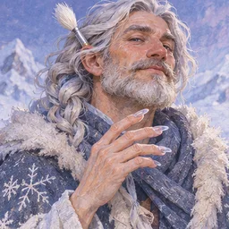
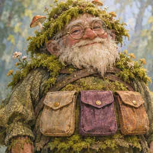
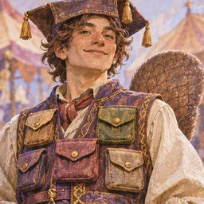
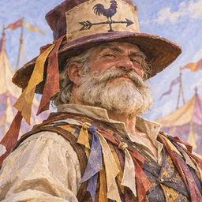

Книга ведущего · Сказочное ремесленное приключение о полезных изобретениях · 12+ · 3–8 игроков + ведущий
Ярмарка невозможных ремёсел
На ярмарке между волшебными пределами вам достался пустой прилавок и горшочек поворотной охры. Напечатайте узор, придумайте для него полезную вещь и выясните, кому она нужна. Соседняя мастерица уже продаёт великолепные бегущие рисунки. Ваш собственный рисунок однажды поведёт себя совершенно неправильно — и окажется нужнее, чем вы предполагали.
Иллюстрация к первой встрече
Если партия изменила план
Перед чтением вступления сверьте место героев, присутствующих людей и предметы с итогом прошлого вечера. Если условия встречи отпали, сыграйте последствия там, где находится партия. Событие по расписанию может произойти за кадром. Герои узнают о нём от тех, кто был на месте.
Вечер 7. Если покупатель возвращает изделие прямо на пробе
Отложите вещь вместе с пометкой, в чьих руках и для чего она не сработала. Мастера могут переделать её или отказаться от заказа. В последнем вечере покажите разные прилавки для проданного изделия и для образца, который мастер оставил себе.
Группа отказалась от задания
Заказы на чудесные ткани не принимаем. Устроим место, где покупатель может сам проверить образец. Оставляем на прилавке образец без обещания одинакового рисунка. У прилавка останется один испытанный шарф. Мастерские решают, брать ли новые заказы.
Игроки раскрыли тайну раньше
Попросим портного повесить пробный шарф и посмотрим на один узор из двух точек при том же свете. Доступные свидетельства — Два случая для одного шарфа, Пробный шарф портного. После поворота шарфа рисунки меняются местами. Эффект зависит от положения наблюдателя. Даём покупателю самому повернуть полотно до оплаты. Второй наблюдатель повторяет перемену. Покупатель знает предел охры и может отказаться от вещи до оплаты.
Партия уступила поле
Нам пришлось отойти от прилавка, обещанный показ сорван. Предлагаем примерить уцелевший образец на месте. Возвращаем задаток и договариваемся о пробе малым образцом. Ярмарка закрывается с незаполненной строкой заказа.
Карман ведущего
Для игры без подготовки: что говорят люди, места в стороне от главной дороги и прохожие. Пометки о правде слухов — только для ведущего; сказанное за столом становится фактом мира, лишь когда вы его подтвердите.
Слухи
«Пустой прилавок новичкам дают на восемь вечеров даром. Ни долга, ни расписки — только вывеску сам пишешь, когда поймёшь, что продаёшь».
Правда. Так и есть: прилавок бесплатен, долгов и скрытых счетов нет. Слух успокаивает игроков, которые ждут подвоха, и напоминает обычай пустой вывески из первого вечера.
«Поворотная охра мысли читает: кто на неё смотрит, тот и видит то, что хочет увидеть».
Неправда. Неправда: картинку выбирает место наблюдения, а не человек и не его желание. Охра не хранит мыслей и ничего не угадывает. Слух хорошо опровергается любым из трёх опытов второго–четвёртого вечеров.
«Севра Четверть рисует так, что рыбы с ткани выпрыгивают. Только к утру всё исчезает — обман, а не работа».
Отчасти правда. Рисунки Севры и правда исчезают к утру, но это не обман: она честно называет срок, а её узоры нужны для праздников и проводов. Севра — достойная конкурентка, не злодейка.
«Пух со двора обрезков букв не пишет, только рисует: каплю, ладонь, иглу, флажок. Говорит, букву прочтёт не всякий».
Правда. Правда: Пух метит корзины знаками назначения. Слух подсказывает, какой обмен он охотно примет во втором и пятом вечерах, — ясные ярлыки для корзин.
«В облачную дверь лучше не заглядывать: увидишь там себя через десять лет, и не обрадуешься».
Неправда. Ярмарочная страшилка для новичков. Двери ведут в волшебные земли, откуда приходят покупатели и погода, и никакого будущего не показывают. Её можно рассказать со смехом у ряда с орехами.
«На Складках вещь не меняют, пока не увидят её в деле. Хоть золотом расписана — сперва покажи, как работает».
Правда. Обычай, о котором Товин говорит в первом вечере. Он задаёт весь ритм кампании: смотреть на работу покупателя, делать пробу и только потом обещать.
«Брылю табличку не угодишь: сам не знает, чего хочет».
Отчасти правда. Брыль просит «два вида», хотя к его углу подходят с трёх сторон, и сам этого пока не заметил. Но он честно повторяет задачу, как только её покажут (вечер 1), и уважает мастеров, которые задают вопросы.
«Мастера двух узоров двенадцатый год работают за одним столом и двенадцатый год спорят, с чего начинать узор».
Правда. Правда: Орса начинает с центра, Иней — с края, и это их настоящая рабочая трудность (вечера 4–5). Слух не решает её: порядок им нужно согласовать самим.
«Круг Флюгеров по своим лентам погоду на неделю вперёд узнаёт».
Отчасти правда. Мастера террасы и правда угадывают погоду за соседними дверями по тому, как ложатся ленты, — но только нынешнюю, а не на неделю вперёд. Это хороший мостик к шестому вечеру, где Круг ждёт от флага слишком многого.
«Если половинки перламутровой застёжки не сошлись — быть ссоре в дороге».
Неправда. Примета, в которую верят у Инея на родине: потому мастера так дорожат точной парой. Самой ссоры застёжка не приносит; используйте слух, чтобы объяснить, почему для заказчиков важна каждая черта.
«На открытом верстаке чужие записи до конца дня не стирают. Стирает только Дара, хранительница стола».
Правда. Обычай верстака из описания места. Он объясняет, почему записи опытов можно найти и повторить позже, и почему Дара просит подписывать формы крупно.
Места в стороне
Ряд жареных орехов
Короткий ряд жаровен у края площади, где орехи калят на углях, принесённых прямо из пламенной двери. Запах слышен за три прилавка, и по нему, говорят, новички находят дорогу, когда заблудятся. По обычаю первая горсть новичку бесплатно, вторую уже меняют на пуговицу или новость. Скорлупу бросают в общий короб: к утру её забирают растапливать печи.
Порог без двери
Плоский каменный порог посреди мостовой, на котором когда-то стояла дверь в волшебные земли. Однажды она закрылась и больше не появилась, а порог остался. Через него не перешагивают, а обходят сбоку, и никто уже не помнит почему. Зато на нём охотно сидят усталые торговцы: камень всегда чуть тёплый, будто с той стороны всё ещё светит чьё-то солнце.
Общий чан с клейстером
Большой медный чан у фонарного столба, полный густого клейстера для ярлыков и вывесок. Брать из него может любой, но сначала полагается трижды размешать общей лопаткой и долить воды, если загустел. На столбе висят обрывки чужих объявлений, наклеенные слоями за много ярмарок. Под самым нижним, говорят, первое объявление площади, только отклеить его до сих пор никому не удалось.
Мокрая скамья у облачной двери
Длинная скамья возле двери с нарисованным облаком, где торговцы ждут покупателей из облачных земель. Скамья никогда не просыхает: створка то и дело выдыхает морось, и сидят на ней, подстелив мешковину. Здесь же продают зонтики на одну прогулку. Кто встречает гостя из-за облачной двери, приносит ему сухой платок — без этого здесь не здороваются.
Колокольня вечерних колоколов
Деревянная башенка с тремя колоколами над переулком примерок. Первый колокол открывает торговый вечер, второй гасит фонари, а долгий прощальный звонят только в последний вечер ярмарки. Верёвки колоколов разного цвета, чтобы звонарь не перепутал их в спешке. На перилах башенки сидят голуби, которые взлетают за мгновение до первого удара, — по ним торговцы и узнают, что пора открываться.
Сундук находок
Окованный сундук у подножия колокольни, куда складывают забытое: одинокие перчатки, мерки, пуговицы, застёжку, которая всё ещё вежливо щёлкает. Брать оттуда можно только своё, и в этом на Складках все удивительно честны. Что за неделю не нашло хозяина, в последний вечер уходит во двор обрезков. На крышке мелом пишут, что и когда положили.
Прохожие
Звонарь Стеклик
Стеклянный житель обычного человеческого роста; в его груди отражаются сразу все фонари переулка, а на запястье намотаны три цветные верёвочки.
«Первый колокол — торговать, второй — гасить, прощальный — помнить».
Может рассказать: На ярмарке три колокола: первый вечерний открывает двери, второй гасит фонари над переулком примерок, а прощальный звонят только в последний вечер.
Орешница Фрося
Круглолицая торговка в кожаном фартуке, прожжённом в трёх местах; щипцы для углей она держит, как дирижёрскую палочку.
«Первая горсть новичку бесплатно — чтобы вернулся за второй!»
Может рассказать: Когда открывается облачная дверь и начинается морось, покупатели толпятся у жаровен; тогда в переулке примерок ненадолго становится свободнее.
Гном Шпунт
Коренастый гном в фартуке с карманами на обеих сторонах; вечно хлопает себя по бокам, отыскивая мерку.
«Карманы с двух сторон — значит, ищешь вдвое дольше. Зато находишь вдвое больше!»
Может рассказать: Зеркала в переулке примерок висят на разной высоте, и самое нижнее, на уровне гномьего колена, повесили по просьбе гномьих покупателей.
Подмастерье Ласка
Худенькая ученица с напёрстком на каждом пальце левой руки и бумажной выкройкой, заткнутой за ухо, как перо.
«Верхний лист — мой, нижний — твой. Ой, нет, опять наоборот…»
Может рассказать: В лавке выворачиваемых сумок ученики работают с обоих концов длинного стола и весь день передают друг другу верхний лист схемы.
Саламандра Жарка
Молодая саламандра в пятнышках, похожих на подгоревшую корочку, с праздничной лентой на хвосте, по которой ещё бегут нарисованные буквы.
«На проводы — только пляшущее! Чтобы уходил и улыбался».
Может рассказать: Севра каждому покупателю заранее говорит, что её узор продержится до утра, и никогда не продаёт праздничную кайму без этого предупреждения.
Клейщица Лепа
Высокая сухая женщина с лопаткой для клейстера за поясом и пальцами, на которых вечно засыхают прозрачные плёнки.
«Клейстер не торопи. Пусть сам схватится, тогда и не отвалится».
Может рассказать: Общий чан с клейстером у фонарного столба бесплатен для всех; сначала положено трижды размешать, а загустевший — разбавить водой.
За десять минут до первой игры
Откройте первый вечер, прочитайте правду мира и участников. Остальные вечера — планы, их исход решают игроки.
Выберите пакет под фактическое число игроков. Первые три героя — готовое ядро; остальные добавляются по порядку. Возраст игрока не определяет героя.
Согласуйте темы, длительность и сигнал паузы. Передайте игрокам только players.html; раздатки выдавайте по отдельности после указанного открытия.
Откройте Мастерскую проекта, создайте личный черновик и импортируйте выбранный JSON через загрузку пакета. Проверьте состав и начало в предпросмотре. Запуск кампании подтверждает ведущий штатным действием.
Откройте иллюстрацию завязки отдельно. Портреты героев входят в файл для игроков, портреты встречных — в книгу ведущего. Тактические схемы доступны в разделе карт.
8 вечеров; 180 минут: 10 минут открытия и итогов прошлого вечера, три сцены по 45 минут, перерыв 15 минут после второй сцены, 20 минут завершения. Дополнительная необязательная схватка заменяет часть своей сцены, а не удлиняет вечер.
Ярмарка Складок занимает ровную площадь между разноцветными дверями в волшебные земли. Здесь встречаются люди, гномы, саламандры и стеклянные жители обычного человеческого роста. Площадь исправна и не нуждается в спасении. Торговцы обменивают изготовленные вещи, материалы и ясно ограниченную работу. Предоставленный героям прилавок бесплатен на восемь ярмарочных вечеров; долгов и скрытых денежных счетов нет. Поворотная охра — сказочный пигмент для ручной печати; её свойства и применение описывает ведущий, она не даёт автоматических способностей.
Живое любопытство, предметный юмор, соперничество достойных мастеров и радость вещи, которая кому-то подошла; ошибки могут стоить материала, заказа или времени, но не достоинства человека.
Различие между красивой диковинкой и полезным предметом
Наблюдение, ручная печать и неожиданное применение рисунка
Понятное обещание покупателю и выбор между разными задачами
Достойное соперничество, авторская гордость и сотрудничество
Границы
12+: без сексуального содержания, натуралистических травм, долгового принуждения и унизительных наказаний за ошибку.
Опасности сказочные: ожившие кисти, разбежавшиеся рисунки и бумажные вихри. Все опыты проводят словами, рисунками или жестами; настоящие красители, режущие инструменты и химические смеси за столом не нужны.
Перед первым вечером согласовать нежелательные темы; любой участник может сказать «пауза» или показать ладонь. Ведущий сразу меняет описание без требования объяснить причину.
Нет обязательных схваток между героями, воровства у партнёров, секретного предательства героев или детских персонажей, которым взрослый игрок обязан командовать. Возраст игрока не определяет возраст и класс героя.
Люди за столом
Все восемь героев начинают у пустого прилавка. Первые трое составляют самостоятельную мастерскую; любой может беседовать, рисовать схему, печатать, наблюдать и записывать. Ни класс, ни заклинание не открывают исключительный доступ к сюжету.
В начале каждой сцены передавайте право первого предложения следующему игроку по кругу, начиная каждый вечер с нового места. Для смешанной подростковой и взрослой группы не назначайте взрослого руководителем по умолчанию.
Перед общим решением дайте минуту на устный ответ, короткую записку или рисунок. Можно пропустить ход и вернуться после остальных. Равноценны простой вопрос «что держит предмет?» и более глубокий «чьё время экономит эта конструкция?».
Назначайте до четырёх параллельных задач, затем возвращайте общий разговор каждые десять минут. Один круг — одно заявленное действие каждого; ведущий завершает все заявления, прежде чем давать кому-то второе. Содержание изображений можно описывать словами: художественные способности игрока ничего не запирают.
На бумаге ведите карточку изделия: покупатель, задача, показанный опыт, ограничение, обещанная партия и оставшийся материал. Это памятка ведущего, не новые автоматические правила, счётчик победы или система торговли.
Без ключевого броска выдавайте доступное наблюдение после названного действия. Проверка влияет на время, сохранность образца или удобство объяснения. После неудачи предлагайте указанную обходную процедуру, а не повтор того же броска.
Отсутствующий герой занят разметкой у прилавка и не принимает решений за игрока. Его карточка и инструменты остаются общими; открытие, заказ и финал продолжаются. Возвращение происходит в начале следующей сцены без штрафа.
На закрытии каждого вечера каждый желающий называет один результат, один вопрос и вклад другого героя. В финале личный эпилог доступен всем восьми ролям независимо от выбранного изделия и успеха заказа.
Каждое различие рисунков обозначайте формой, положением или словом вместе с цветом. Не требуйте распознавать оттенки, мелкий шрифт, реальную зеркальную надпись или быстро рисовать. Ведущий прямо сообщает, какой рисунок виден с выбранного места.
Масштабирование группы
3 игрока
Три ядровых героя: один беседует с покупателем, второй ставит опыт, третий наблюдает и записывает; меняйте роли после каждого опыта. Ведущий озвучивает только одного посетителя за раз. Все технические пути и оба заказа доступны троим.
4 игрока
Добавьте независимого испытателя, который сначала читает обещание, затем пробует предмет. Разговор, сборка, наблюдение и испытание дают четыре равных вклада; меняйте роли между сценами.
5 игроков
Пара собирает, пара проверяет потребность, пятый ведёт карточку и ищет исключение. Через десять минут общий сбор; пятая роль начинает следующий опыт, чтобы не стать постоянным секретарём.
6 игроков
Три пары: покупатель и применение, материал и сборка, проверка и инструкция. Разрешайте заявления всех пар одним кругом, затем общий выбор; роли переходят по кругу после каждой сцены.
7 игроков
Три пары и один свободный проверяющий намеренно пробуют допустимый край использования. Проверяющий меняется каждые десять минут и имеет собственное решение, а не только право оценивать других.
8 игроков
Четыре пары: применение, конструкция, повторяемость, передача покупателю. В каждой паре сначала говорит тот, кто в прошлой сцене говорил меньше. Соберите по одному действию всех восьми до ответа НИП и возвращайтесь к общему верстаку каждые десять минут.
Первое чтение вслух
Ярмарка Складок открывается не воротами, а дверями. Они стоят по краю ровной мощёной площади прямо в воздухе, без стен и косяков, и на каждой вместо номера нарисован материал: облако, камень, пламя, перламутр. Когда створка распахивается, из неё тянет чужой погодой — то снежной пылью, то тёплым дымом, то каплями сказочного тумана, — и на площадь выходят покупатели: люди, гномы, саламандры с матовой оранжевой кожей, стеклянные жители ростом с обычного человека, в которых отражаются фонари. Пахнет мокрой шерстью, клейстером и жареными орехами. Здесь меняют изготовленные вещи, материалы и честно оговорённую работу, а обычай для новичков простой: пустой прилавок на восемь ярмарочных вечеров, бесплатно, без долгов и расписок. Вывеску новичок пишет сам — когда поймёт, что продаёт.
Ваш прилавок стоит по соседству с белыми шарфами и сушильными шнурами. На нём лежат вывеска без единой буквы, деревянный валик с расписной ручкой и горшочек поворотной охры: она блестит, как мокрая чешуя, и пахнет сухими лепестками. Соседка в бело-зелёном полосатом фартуке, маленькая гномка с прямой чёлкой, печатает на шарфе рыбок, и они исправно плывут по кругу, огибая её пальцы. Над её прилавком написано: «Сегодня танцует, завтра чисто».
Охру вам выдали вместе с прилавком: ярмарочный обычай велит, чтобы новичок начинал не с покупки, а с собственного оттиска. Что умеет этот пигмент, продавец объяснять не стал — сказал только, что охра «поворотная» и что спешить с ней не надо. Соседи посмеиваются по-доброму: у каждого здесь когда-то была такая же пустая вывеска. Сегодня ваш первый ярмарочный вечер. Вывеска ждёт слова, валик — первого оттиска, а площадь — вечернего колокола, после которого двери по краю открываются для покупателей.
Правда мира · только ведущему
Поворотная охра — новый ремесленный пигмент, а не часть древнего устройства. Её мелкие волшебные лепестки ложатся по направлению движения печатного валика. Каждый из двух встречных проходов показывает свой неподвижный рисунок наблюдателю с соответствующего конца стола.
Сначала герои могут считать смену картинки декоративной прихотью. Главное открытие: рисунки не сменяют друг друга во времени; два человека одновременно видят на одной и той же стороне полотна разные рисунки. Место наблюдения, а не личность или намерение, выбирает видимую картинку.
Три независимых пути дают весь вывод: два наблюдателя меняются местами у открытого верстака; портной разворачивает пробный шарф, пока герои одновременно зарисовывают оба вида; конкурентка показывает свои встречные пробные отпечатки и повторяет их при героях. Во всех трёх путях рисунки имеют разные формы и подписи, поэтому цветоразличение не требуется.
Полезное применение — многоразовое рабочее полотно, где мастера с противоположных концов видят свои схемы одной задачи: наружную и внутреннюю стороны детали либо прямой и зеркальный узоры. Такой предмет помогает работе, а не хранит мысли, голоса, чужие воспоминания или будущее.
Мастерица Севра Четверть делает яркие движущиеся рисунки, которые держатся один день и затем исчезают. Они отлично подходят для праздника и свободно меняются завтра. Её покупатели нередко ценят зрелищность выше долговечности. Севра честно конкурирует, предлагает новую отделку и может сотрудничать; она не саботажница.
У поворотной охры есть пределы: только два чётких вида, видимых из отмеченных направлений; боковой наблюдатель увидит путаницу. Без обычного света рисунок не виден. Вода размывает незакреплённый узор; закреплённый можно снять специальной мыльной пастой, но новый заказ требует новой ручной печати. Пигмент ничего не двигает, не исправляет и не выполняет за пользователя.
В пятом вечере герои выбирают заказ: шесть рабочих полотен для выворачиваемых сумок Листвы либо один совместный разметочный коврик для прямого и зеркального орнамента Орсы и Инея. Первый требует повторяемой разметки и короткой инструкции; второй — согласования двух конкретных рабочих последовательностей. Ни один заказ не предрешён.
Финал — заказчики делают настоящую вещь по нанесённым схемам, без постоянных подсказок героев. Можно сдать всё, ограниченную часть, совместную работу с Севрой или отказаться от ненадёжного обещания. Здесь нет спасения рынка, совета, выставки, восстановления магии или обязательной славы.
Повороты сюжета
Только для ведущего. Сюжетные повороты держатся на мелочах, замеченных заранее: посейте их в названные вечера, а раскрытие отдайте героям, если они догадались раньше.
Не по очереди, а одновременно
Сначала кажется, что поворотная охра просто меняет картинку со временем — декоративная прихоть: рыба то есть, то нет. На деле рисунки не сменяют друг друга: два человека одновременно видят на одной стороне полотна разные рисунки, и выбирает картинку место наблюдения, а не время, личность или намерение.
Что посеять
Вечер 1. Пробный шарф Товина: рыба становится лестницей, стоит кому-нибудь перейти к другому концу стола.
Товин вешает сохранённый шарф на раму, и двое у противоположных концов одновременно называют разные фигуры — рыбу и лестницу. Поменявшись местами, они меняются и рисунками, но рисунки остаются привязаны к концам. Пусть стол сам скажет вслух, что картинка зависит от места, а не от времени и не от того, кто смотрит. Тот же вывод в любой момент дадут опыт у Дары или проба Севры.
Что меняется после
Охра перестаёт быть забавным украшением и становится материалом с понятным свойством. Теперь можно спрашивать не «как сделать красивее», а «кому нужны два вида на одном месте».
Соперница, а не враг
Севра Четверть с её пляшущими однодневными рисунками кажется соперницей, которая переманит покупателей или помешает. На деле она конкурирует честно, сама предупреждает о сроке своей краски, хранит пробу поворотной охры и готова показать её бесплатно, а её сменная кайма может стать частью общей вещи.
Что посеять
Вечер 1. Товин: «Севра честная: что станцует сегодня, завтра смоет, и сама об этом предупредит».
Вечер 1. Товин показывает праздничный шарф Севры рядом с рабочим: «Этот — на свадьбу, пусть пляшет».
Поворот — вечер 3
В мастерской Севры по первому же вопросу о других красках она достаёт из нижнего ящика пробу поворотной охры и бесплатно повторяет встречные проходы. Ни продажи, ни секретов, ни обещания союза она не требует. Пусть стол сам решит, кто она теперь: соперница, соседка или будущая соавторша. Её кайма через широкое пустое поле — предложение, а не условие.
Что меняется после
Отношения с Севрой становятся выбором: держать независимость, договориться о съёмной кайме с двумя клеймами или делить заказы по отдельности. Любой вариант честен, а её рыбы без работы не останутся в любом случае.
Польза не там, где эффект
Кажется, что ценность охры — в удивительном эффекте и продавать её надо как диковинку. На деле её настоящая польза — рабочее полотно, где мастера с противоположных концов стола видят каждый свою схему одной задачи: наружную и внутреннюю сторону сумки или прямой и зеркальный узор. А украшение рядом со схемой только мешает её читать.
Что посеять
Вечер 2. Листва показывает, как перекладывает листы «раз сорок за одну сумку».
Вечер 3. Дара, глядя на образец с плотной каймой, сначала видит рыбу и лишь потом — начало схемы.
Поворот — вечер 4
Листва кладёт грубые оттиски на свой стол, и ученик с другого конца отзывается: «А я сгиб — и ничего не надо убирать!» Пусть стол сам заметит, что декоративный материал только что убрал лишний шаг из чужой работы. Удачный миг тут же соседствует с ограничением: зашедшая сбоку Листва видит кашу. Если до опыта у её стола не дошли, ту же пользу покажет просьба Орсы и Инея о зеркальном узоре.
Что меняется после
Мастерская выбирает между диковинкой и рабочей вещью — или держит их на разных полках. Пятый вечер приносит два настоящих заказа, и оба про работу, а не про удивление.
Восемь вечеров
1. Неподходящая рыбка — Выбрать первое небольшое обещание покупателю, сделать пробный предмет и увидеть разницу между красивым эффектом и задачей.
2. С какой стороны нужна вещь — Понаблюдать за тремя реальными применениями, проверить материал и выбрать, какое направление опытов продолжать.
3. Соседка делает иначе — Встретить достойную конкурентку, сравнить два способа печати на разных задачах и определить собственное обещание.
4. Две схемы на одном месте — Увидеть ценное неожиданное применение двух видов и решить, какую практическую вещь мастерская будет доводить до заказа.
5. Два заказа, одна мастерская — Выбрать конкретный заказ, согласовать проверяемую приёмку и подготовить необходимый материал без обещания сделать всё.
6. То, чего рисунок не знает — Проверить реальные пределы изделия, отказаться от неподходящего применения и подготовить понятный уход.
7. Последняя проба — чужими руками — Изготовить согласованный объём, проверить передачу без подсказок и выбрать честный способ завершения.
8. Вещь уходит из рук — Выполнить выбранный практический заказ в реальной работе, принять фактический результат и завершить личные истории мастеров.
Места
Ярмарка Складок
Ровная мощёная площадь, по краю которой прямо в воздухе стоят двери в волшебные земли — без стен и косяков, только створка и порог. Вместо номеров на них нарисованы материалы: облако, камень, пламя, перламутр, и по рисунку торговцы угадывают, что придёт сегодня из-за порога. Говорят, площадь назвали Складками потому, что дальние земли здесь сложены вплотную, как ткань в стопке.
Прилавок с пустой вывеской
Низкий прилавок, общий печатный стол и восемь разных табуретов, собранных по всей ярмарке: гномий на трёх ножках, высокий стеклянный, плетёный, один с подпиленной ножкой. На шнурах сохнут пробные оттиски, на задней полке лежат чистые полотна. Вывеска пока пустая: по ярмарочному обычаю новички пишут на ней название только после первого настоящего покупателя.
Лавка внутренних сторон
Тесная лавка, где куртки висят на распялках изнанкой наружу, чтобы были видны все подкладки сразу: одна для дождя из облачной двери, другая для жара из пламенной, третья для обычного вечера. Шарфы здесь носят разными концами вперёд, и на каждом конце пришита своя метка. На стене висит простая деревянная рама для примерок, вытертая до блеска чужими локтями.
Переулок примерок
Узкий шумный переулок, где покупатели меряют шляпы с прорезями для рогов, очки для одного большого глаза и фартуки с карманами на обеих сторонах. Зеркала висят на разной высоте — от гномьего колена до стеклянного плеча. На полу мелом и краской отмечены места, откуда удобнее всего разглядывать товар, и торговцы охотно спорят, чья отметка честнее.
Мастерская Севры Четверть
Светлый прилавок, где по белым шарфам бегут нарисованные рыбы, звери и буквы, огибая складки и пальцы покупателей. Над ним висит честная надпись: «Сегодня танцует, завтра чисто». К вечеру здесь выстраивается очередь тех, кому нужен наряд на праздник или проводы, а утром на шнурах снова висит чистая ткань. Рядом с прилавком любой может испытать пробный узор.
Открытый верстак
Общий печатный стол под навесом: деревянные валики, стопки бумаги, мелки и маленькое зеркальце на подставке. С двух противоположных сторон стоят табуреты — на одном нарисовано солнце, на другом месяц. Результаты опытов пишут мелом прямо на столешнице, и по обычаю верстака чужие записи не стирают до конца ярмарочного дня: это право только у хранительницы стола.
Двор обрезков
Под сетчатым навесом стоят корзины разноцветных тканей и пустые деревянные рамы, сложенные шалашом. На каждой корзине крупно, без единой буквы, нарисовано назначение материала: капля, ладонь, игла, флажок. Сюда несут обрезки со всей ярмарки, и расплачиваются здесь не монетой, а обменом — ярлыком, починкой или толковым советом хозяину двора.
Лавка выворачиваемых сумок
Здесь продают сумки, которые выворачиваются наизнанку и от этого меняют число наружных карманов: было два, стало пять. На длинном узком столе разложены бумажные выкройки, тупые мерки и образцы швов, а ученики работают с обоих концов сразу и то и дело передают друг другу верхний лист. На стене висит сумка-образец, вывернутая наполовину, чтобы видны были обе стороны.
Мастерская двух узоров
Небольшая мастерская, где пахнет перламутровой пылью и тёплым воском. Два мастера работают с противоположных концов одного стола и переговариваются, не поднимая голов. На полках лежат половинки перламутровых застёжек — у одних прямой орнамент, у других зеркальный, — и каждая ждёт свою пару. На ярмарке такие застёжки принято дарить тем, кто уходит в дорогу вдвоём.
Терраса косых порывов
Открытый деревянный помост на краю ярмарки, где на верёвках полощутся широкие полосы ткани. Соседние двери в волшебные земли время от времени выпускают короткий косой ветер — то с запахом снега, то с каплями сказочного тумана, — и свободные флаги сами поворачиваются. За защитными ширмами можно спокойно сушить отпечатки; здешние мастера узнают погоду за дверями по тому, как ложатся ленты.
Стол первой работы
Простой рабочий стол у выхода с ярмарки, где заказчик пробует вещь, прежде чем её унести. С двух сторон хватает места для работы, сбоку стоит табурет для помощника, а столешница исцарапана тысячами первых стежков и пробных разрезов. Обычай здесь неторопливый: мастер стоит в стороне, покупатель делает первую работу сам и только потом говорит, берёт ли вещь.
Товин Подкладка
56 лет. Портной в куртке с тремя подкладками; из кармана торчит полосатый пробный шарф. Шьёт одежду, которую можно носить несколькими сторонами, и охотно показывает обычный порядок примерки.
Место: Лавка внутренних сторон
Намерение
Получить спокойный узор для шарфа, который не отвлекает, когда разговариваешь с покупателем.
Собственные знания
Его шарф можно повернуть к наблюдателю разными концами, не выворачивая ткань.
На своей сохранённой пробе он видел лестницу с одного конца и рыбу с другого одновременно с помощником.
Он сделал сохранённую пробу двумя встречными проходами валика. Не знает внутреннего устройства охры, но может показать движения и повторить наблюдение.
Что говорит
При первой встрече. «Вот я говорю покупателю: эта подкладка от мороси, эта — от жара. А он смотрит мне на шею, где рыба опять пошла по кругу».
О Севре. «Севра честная: что станцует сегодня, завтра смоет, и сама об этом предупредит».
О раме. «Эту раму сколотил ещё мой отец, когда на Складках было вдвое меньше дверей».
О пробе. «Брак бывает скучным, а этот — нет. Не выбрасывайте его, мне ещё любопытно».
О двух шарфах. «Этот я брал у Севры на свадьбу племянницы — пусть пляшет. А за прилавком мне нужно, чтобы смотрели на куртку».
В конце. «Покупатели теперь смотрят на подкладку, а рыба помалкивает. Иногда даже скучаю по её кругам».
Секрет или личное убеждение
Его покупатели уже отвергли танцующих рыб на рабочей одежде, но любят их на праздничной. Товин ещё не сформулировал, что один рисунок не обязан подходить обоим случаям.
Граница и раскрытие
Не знает внутреннего устройства охры, чужих заказов и будущего выбора героев. Может описывать только собственную одежду и увиденный опыт.
Показывает пробный шарф после просьбы сравнить узоры. Даёт двум героям смотреть одновременно и предлагает поменяться местами без броска.
Севра Четверть
41 лет. Гномка с прямой чёлкой и бело-зелёным фартуком; нарисованная рыба проплывает по его нижнему краю. Печатает великолепные движущиеся узоры и заранее предупреждает, что к утру они исчезнут.
Место: Мастерская Севры Четверть
Намерение
Получить заказ на яркую отделку партии и показать, что ежедневная смена рисунка сама по себе полезна.
Собственные знания
Её собственная пляшущая краска держится один день и затем исчезает, не оставляя рисунка.
На сохранённой пробе встречные проходы валика дают два рисунка, видимых одновременно с противоположных концов.
Она умеет делать сменную декоративную кайму, которую можно пристегнуть к отдельному рабочему полотну.
Что говорит
При первой встрече. «Вчера на нём плясали звери, сегодня он чистый, как в день покупки. Я каждому говорю: до утра, и ни минутой дольше».
Об обычае. «На проводы берут. Праздник, оставшийся на ткани, — уже не праздник, а пятно».
О пробе охры. «Лежит смирно, никуда не бежит, а мои покупатели любят, чтобы бежало. Вот и отправила её в ящик».
О плате. «За погляд на Складках платят разве что сплетнями, а их у меня и своих хватает».
Об условиях. «Моя кайма пристёгивается и отстёгивается, срок написан на ней, а моё клеймо стоит рядом с вашим, не поверх».
О соперничестве. «Праздники на Складках каждый вечер, мои рыбы без работы не сидят. Ждать вас не буду».
Секрет или личное убеждение
Севра сохранила пробу поворотной охры, которую сочла слишком неподвижной для своей лавки. Она не исследовала рабочее применение, но охотно сравнит методы.
Граница и раскрытие
Не знает, каким будет изделие героев и какие опыты они провели вне её присутствия. Её оценка «покупателям важнее красота» — мнение, а не факт обо всех клиентах.
После вопроса о других красках достаёт пробу и бесплатно повторяет встречные проходы. Покупать товар, побеждать в споре или бросать кость для этого не требуется.
Листва Внутренний Карман
32 лет. Мастерица с листьями вместо волос и сумкой, у которой карманы находятся сразу на двух сторонах. Шьёт выворачиваемые сумки и работает с учениками за длинными узкими столами.
Место: Лавка выворачиваемых сумок
Намерение
Шесть многоразовых полотен, на которых с одного конца видна наружная схема, а с другого — схема внутренней стороны той же сумки.
Собственные знания
Для её сумки нужны две разные схемы одной детали: наружные карманы и внутренний сгиб.
Работа ведётся с двух концов стола; отдельные листы постоянно перекрывают друг друга.
Она согласна проверить партию на обычной ткани и сама назвать условия приёмки до заказа.
Что говорит
При первой встрече. «Наружный лист сверху — вижу карманы. Убираю — вижу сгиб. Кладу обратно. И так раз сорок за одну сумку».
Об обычае. «За перламутровой дверью в гости ходят с подарками, а домой возвращаются с покупками. Одна сумка, две жизни».
После опыта. «Ученик видит сгиб, я — карман, и ничего не надо убирать! Ой. А сбоку каша. Так и запишем».
О приёмке. «Мешочек я сошью сама, при вас. Если на втором полотне карман окажется не там, где на первом, я это увижу».
О привычке. «После каждого ученика — мокрой тряпкой. Не просите бросить, просите сделать иначе».
О частичной поставке. «Два честных полотна возьму, но шестью их называть не стану».
Секрет или личное убеждение
Листва лучше читает крупные простые формы, чем мелкие пометки. Ей важнее одинаковое расположение знаков на всей партии, чем нарядный край.
Граница и раскрытие
Не знает работу Орсы и Инея без их рассказа. Не обещает принять изделие, пока не изготовит по схеме сумку самостоятельно.
При просьбе показать обычную работу кладёт две схемы одна на другую и демонстрирует, где они мешают. Требование крупных знаков сообщает прямо.
Орса Угольная Черта
38 лет. Саламандра с матовой оранжевой кожей и кисточками в широком тканевом поясе. Расписывает одну половину парных перламутровых застёжек прямым орнаментом.
Место: Мастерская двух узоров
Намерение
Видеть прямую схему в том же месте стола, где напарник видит зеркальную, чтобы сравнивать одинаковый этап работы.
Собственные знания
Она начинает свою половинку с центральной петли, затем добавляет внешние черты.
Её привычный знак начала — большой круг, который не следует путать с украшением.
Для одной застёжки нужны прямой и зеркальный рисунки, совпадающие по выбранному порядку элементов.
Что говорит
При первой встрече. «Я начинаю с середины. Мой знак начала — большой круг, только не примите его за украшение».
О напарнике. «Мы вместе работаем двенадцатый год и двенадцатый год спорим, с чего начинать».
О просьбе. «С зеркальным узором так получится? Мы каждый день переворачиваем общий лист, и каждый раз кто-нибудь путает верх».
О краях. «Мой край — с кругом, его — с треугольником. Перепутаете — скажем сразу и без обид».
О вставке. «Как подкладка у Товина: одна вещь, две жизни. Мне нравится».
В конце. «Застёжку, сделанную в последний вечер ярмарки, носят до следующей ярмарки».
Секрет или личное убеждение
Орса предпочитает начинать узор с середины, хотя на общей записке первым нарисован край. Она ещё не объяснила Инею, почему постоянно меняет порядок.
Граница и раскрытие
Не знает мыслей Инея и не может согласовать его последовательность за него. Не знает свойств охры до показанного опыта.
Когда ей дают самому пройти обычную работу, начинает с центра и объясняет причину. Изображать действия словами достаточно; рисовать действительно не требуется.
Иней Ракушечный

52 лет. Мастер из снежного предела с прозрачными ногтями и белой кистью за ухом. Наносит зеркальный орнамент на вторую половину застёжки Орсы.
Место: Мастерская двух узоров
Намерение
Сверять свой этап с напарницей, не переворачивая общий лист после каждого движения.
Собственные знания
В его порядке сначала появляется внешний угол, затем центральная петля.
Зеркальный рисунок и перевёрнутая вверх ногами схема — разные вещи.
Крупный треугольник у его края стола помог бы находить правильное рабочее место.
Что говорит
При первой встрече. «Я — с внешнего угла. И зеркальный узор — не перевёрнутый: переверните схему, и застёжка не застегнётся».
Об обычае. «Половинки дарят тем, кто уходит в дорогу вдвоём. Не сошлись половинки — плохая примета, и виноват мастер».
О прошлой ошибке. «Однажды я повторил стрелку с чужого конца стола. Вышла неверная последовательность и испорченная застёжка».
О знаке. «Запишите крупно, какой край мой. Треугольник у моего края — и больше я ни о чём не спрошу».
Об уходе. «Перламутровая пыль въедается за ночь, ткань надо сворачивать после каждого изделия».
О будущем. «Эта пара — для этой застёжки. Для другой придём снова, если эта сойдётся».
Секрет или личное убеждение
Иней однажды повторил стрелку с чужого конца стола и получил неверную последовательность. Теперь считает рабочее направление частью любого рисунка.
Граница и раскрытие
Не знает предпочтений Орсы, пока она их не покажет. Не исправляет схемы автоматически и не знает будущую форму изделия героев.
При просьбе сравнить схемы показывает собственный порядок и прошлую ошибку. Объясняет отличие зеркального изображения словами, без задачи на пространственное воображение игроков.
Пух Запасной Кусочек

71 лет. Невысокий моховой человек с круглыми очками и тремя матерчатыми карманами на животе. Сортирует остатки тканей и рам, на каждом подносе рисует назначение материала крупным знаком.
Место: Двор обрезков
Намерение
Обменять коробку гладкого полотна на ясные ярлыки для корзин с разными видами ткани.
Собственные знания
Гладкое сухое полотно хорошо держит пробный оттиск.
Складское полотно с мыльной пропиткой предназначено для стираемых ярлыков, а не для долгой работы.
Ожившие кисти возвращаются к сухой подставке, если им предложить ненужный чистый лоскут.
Что говорит
При первой встрече. «Я букв не пишу, я рисую. Букву прочтёт не всякий, а каплю поймёт и гном, и саламандра, и стеклянный».
О ткани. «Здесь ничего не выбрасывают — у каждого обрезка есть второй хозяин. Только вот который из них который…»
О кистях. «Они тут сами завелись. Дайте им ненужный чистый лоскут — они его любят больше моих ярлыков».
О ярлыках. «Капля, ладонь, игла, флажок — и никаких букв, пожалуйста».
Об эталоне. «У печатников говорят: первый оттиск — учитель, остальные — ученики. С учителем не торопитесь».
Об упаковке. «Бантик не шов. Непроверенное в красивой бумаге — всё равно непроверенное».
Секрет или личное убеждение
Он смешал в одной корзине ткань для проб и ткань с готовой мыльной пропиткой. Пропитка смывает охру; Пух помнит различие фактур, но стёр обозначение корзины.
Граница и раскрытие
Не знает свойств готовых изделий и не гарантирует долговечность чужой печати. Отвечает лишь о своей ткани и прежних пробах.
При вопросе о пропитке показывает различие и проводит пробное смачивание на ненужном лоскуте. Проверить оба образца можно без разговора.
Дара Меловая Черта
26 лет. Человек с короткими серебристыми волосами; рукава покрыты белыми следами мела. Следит, чтобы общий печатный стол был свободен, а чужие результаты не стирали до конца дня.
Место: Открытый верстак
Намерение
Увидеть опыт, который другой человек может повторить по одной короткой записи.
Собственные знания
На верстаке есть валики, зеркало и бумага; два противоположных места отмечены солнцем и месяцем.
Любой посетитель может бесплатно поставить опыт и записать наблюдение.
До прихода героев она не видела их охры и может лишь повторить показанную последовательность.
Что говорит
При первой встрече. «Солнце и месяц стоят у меня друг против друга как раз для таких споров. Садитесь и спорьте, мел за мной».
О формах. «Круг от треугольника отличит каждый, а два оттенка охры в сумерках — не всякий».
Об обычае. «Что написано мелом, стоит до конца дня, потом стираю я сама. Так что подписывайте крупно».
На пробе. «Я сейчас покупатель, который вас в глаза не видел. Вы молчите, я не спрашиваю».
О записи. «Если запись не может повторить чужой человек, это не запись, а воспоминание».
О памятке. «Тут сказано: выбранный знак — перед вами. А кто его выбирает? Знаков-то два».
Секрет или личное убеждение
Дара лучше понимает различие фигур, чем близких оттенков, и иногда стесняется об этом сказать. Её просьба подписывать формы полезна не только ей.
Граница и раскрытие
Не знает объяснения пигмента заранее и не служит всезнающим голосом ведущего. Не получает чужие открытия вне показанного разговора.
Когда её просят различить оттиски, просит добавить форму или подпись. После демонстрации честно сообщает, что смогла повторить по записи.
Брыль Семь Карманов

19 лет. Купец с пушистым плоским хвостом, семью карманами на жилете и квадратной шляпой. Продаёт застёжки, которые вежливо щёлкают покупателю, и любит необычные вывески.
Место: Переулок примерок
Намерение
Иметь яркую табличку, которую покупатели понимают с любого подхода к его угловому прилавку.
Собственные знания
К его прилавку подходят спереди и с обоих боков.
Слово «открыто» должно быть понятно всем пришедшим, а не только выбранному наблюдателю.
Он готов показать три обычных подхода или нарисовать их на бумаге.
Что говорит
При первой встрече. «Мне бы два полезных вида, как у вас на лоскуте! Чтобы все ахали, а потом покупали застёжки».
О прилавке. «Мой угол там, где переулок примерок упирается в двор обрезков. Одни идут от зеркал, другие с мешками ткани, третьи просто заблудились».
На пробе. «А покупатель, который пришёл слева, меня найдёт? Он ведь тоже хочет застёжку».
О товаре. «Мои застёжки щёлкают вежливо — гномы не терпят, когда им щёлкают грубо».
Об отказе. «Мастера, которые говорят „не умеем“! Таких на Складках поискать».
В конце. «Меня теперь находят даже те, кто приходит слева! Я считал — трое за утро».
Секрет или личное убеждение
Он просит «два полезных вида», но ещё не заметил, что его покупатели подходят с трёх направлений. Его исходная просьба не описывает реальную задачу полностью.
Граница и раскрытие
Не знает действия охры до примера. Его требования относятся только к угловому прилавку и не определяют весь рынок.
При просьбе показать последнюю неудобную ситуацию сам проходит все три подхода. Откровенно сообщает, если красивый образец не выполняет его задачу.
Круг Флюгеров

64 лет. Крепкий мастер в жилете с тканевыми лентами; на широком ремешке его шляпы нарисован флюгер. Шьёт лёгкие наружные флаги и знает обычные порывы на сушильной террасе.
Место: Терраса косых порывов
Намерение
Проверить, можно ли печатать охрой указатели на свободно вращающемся флаге.
Собственные знания
На террасе можно сравнить закреплённое полотно и свободно вращающийся флаг.
С соседней двери иногда прилетают капли сказочного тумана.
В мастерской есть сухая ширма, за которой опыт можно спокойно повторить.
Что говорит
При первой встрече. «Я флаги шью сорок лет, и каждый что-нибудь да показывал. А тут флаг, который сам знает, что показать!»
О приметах. «Ветер из снежной двери врёт, из пламенной торопит. Потому мы и сушим за ширмами».
В порыв. «Верёвку держите, верёвку! Пустая верёвка на ветру — первая беглянка!»
О завитках. «Это ветер, который запутался в бумаге. Подсуньте им чистый лист — на нём и уснут».
Признавая. «Выходит, ему всё равно, что сейчас нужно, — он показывает туда, куда повернули. Как флюгер, только флюгер хоть ветер знает».
В конце. «Обычный знак — тоже дело. Сорок лет обычные шил, и никто не жаловался».
Секрет или личное убеждение
Круг заранее вообразил, что два вида появятся в нужный момент сами. При показе он готов признать, что вращающийся флаг и рабочий коврик — разные задачи.
Граница и раскрытие
Не знает ограничений нового пигмента и не обещает направлять им ветер. Не вызывает порывы нарочно и не скрывает замеченную размытую печать.
При просьбе показать предполагаемое применение вешает простой пробный флажок рядом с неподвижным полотном. Обнаруженное различие сообщает сразу.
Возможные финалы
Шесть полезных полотен
Условия: Выбран заказ Листвы; шесть полотен дают одинаковую процедуру, покупательница самостоятельно изготовила по одному из них выворачиваемую сумку.
Мастерская получает предложение следующей небольшой партии. Герои сами решают, хотят ли повторять удачную вещь и насколько расширять дело.
Цена: Большинство запаса и времени уходит на одинаковые оттиски; личный заказ Орсы и Инея приходится отклонить или перенести без обещания срока.
Эпилог — читать вслух
Шесть полотен лежат на шести узких столах в лавке Листвы, и на каждом карман стоит там же, где на первом. Ученики больше не перекладывают листы: один смотрит со своего конца и видит наружную схему, другой — со своего и видит внутренний сгиб. Листва сшила по одному из полотен маленькую выворачиваемую сумку — сама, при всех, ни разу не спросив мастера — и повесила её над дверью вместо вывески. Мастерская получила предложение следующей небольшой партии. Брать ли её и насколько расширять дело, герои решают сами: одни хотят повторять удачную вещь, другие уже думают о новой. Большая часть запаса и времени ушла на одинаковые оттиски, и личный заказ Орсы и Инея пришлось отклонить или отложить без обещания срока. Иней принял отказ спокойно: «Вслух — значит, честно». На верстаке мастерской по-прежнему лежит первая неудачная рыбка, которая с другого конца стола всё ещё лестница. С неё всё началось. Шесть столов, шесть учеников, одна процедура — и ни одного переложенного листа за всю неделю.
Два взгляда на один узор
Условия: Выбран коврик Орсы и Инея; оба мастера с рабочих мест нанесли согласованные прямой и зеркальный узоры и завершили одну парную застёжку.
Коврик уходит в их мастерскую вместе с метками рабочих направлений. Героям предлагают индивидуальные заказы с предварительным наблюдением за работой.
Цена: Схема подходит этим двум последовательностям, а не любым мастерам; обещать универсальность нельзя, серия Листвы уходит другой мастерской.
Эпилог — читать вслух
Коврик лежит на рабочем столе в мастерской двух узоров, и Орса с Инеем сидят по разные стороны от него. Она видит прямую схему у своего края, с большим кругом в начале; он — зеркальную у своего, с треугольником. Порядок этапов совпадает, и первая парная застёжка сошлась с первой попытки. Орса носит её на поясе: по обычаю застёжку, сделанную в последний вечер ярмарки, носят до следующей. Коврик ушёл в их мастерскую вместе с метками рабочих направлений и короткой памяткой: «Только для этих двух рук, только для этого порядка». Героям уже предлагают штучные заказы — с предварительным наблюдением за работой, как было здесь. Обещать универсальность нельзя, и никто не обещает: схема подходит этим двум мастерам, а не любым. Серия Листвы ушла другой мастерской, и Листва, проходя мимо, машет рукой без обиды. Иней, складывая коврик на ночь, говорит: «Двенадцать лет мы спорили, с чего начинать. Теперь спорим, кто быстрее закончит». Это хороший спор.
Общее клеймо
Условия: Герои и Севра заранее согласовали работу: долговечная схема на съёмной основе героев и сменная декоративная кайма Севры; заказчик испытал их вместе.
Покупатель получает рабочую вещь с двумя честно обозначенными сроками службы. Две мастерские могут продолжить сотрудничество.
Цена: Вознаграждение и авторство разделены; сменная кайма требует отдельного ухода и не должна закрывать рабочие знаки.
Эпилог — читать вслух
На готовой вещи два клейма, рядом, а не поверх: мастерской героев и Севры Четверть. Рабочая схема держится долго, на съёмной основе; декоративная кайма Севры пляшет до утра и потом исчезает, как и написано на её обороте. Заказчик испытал обе части вместе и знает, за что отвечает каждая мастерская: за схему — одни, за праздник — другие. Вознаграждение разделено по карточке, авторство тоже. Кайма требует отдельного ухода: её надо снимать перед мытьём и пристёгивать заново, и она ни в коем случае не должна закрывать рабочие знаки. Севра проверила это сама, трижды. «Соседство с бумагами», — называет она их договор и смеётся. Две мастерские могут продолжить сотрудничество, но каждый заказ обсуждают отдельно, без вечных клятв. Конкуренция не исчезла: Севра по-прежнему продаёт праздничные шарфы, а герои — рабочие полотна, и прохожие выбирают между ними у общей доски. Но теперь на Складках есть вещь, которая и работает, и радует, и на ней честно написано, кто что сделал.
Малое обещание
Условия: Полная партия или обе схемы не подтверждены, но заказчик согласился принять два полотна либо коврик только для одного точно описанного орнамента после успешной пробы.
Состоялась законченная ограниченная поставка. Дальнейший заказ обсуждается отдельно и не засчитывается автоматически.
Цена: Оплата материалами меньше; часть отпечатков остаётся у героев, а непроверенные применения исключаются из инструкции.
Эпилог — читать вслух
Полная партия не подтвердилась, и обе схемы до конца не дошли. Но заказчик согласился принять то, что выдержало пробу: два полотна вместо шести или коврик для одного точно описанного орнамента, а не для всех. Ограниченная поставка состоялась целиком: каждое переданное полотно испытано руками того, кто будет им пользоваться. Оплата материалами меньше, чем обещала первая карточка. Часть отпечатков осталась у героев на полке «исправляемое», а непроверенные применения вычеркнуты из инструкции. Дальнейший заказ обсуждается отдельно и сам собой не засчитывается: если захотят, придут снова. Заказчик, уходя, говорит: «Два честных лучше шести обещанных». На верстаке лежит первая неудачная рыбка, а рядом карточка, на которой зачёркнуто больше, чем оставлено. Но всё оставленное — правда. Маленькое обещание выполнено полностью, и это иногда стоит больше большого, выполненного наполовину. Мастерская знает теперь, сколько она умеет на самом деле, — и этого знания у неё никто не отнимет.
Хорошая причина переделать
Условия: Финальная проба остановлена, покупатель отказался принимать изделие и согласованного ограниченного применения нет.
Ярмарочная неделя заканчивается без выполненного финального заказа. Остаются образцы, записи и выбор каждого героя, продолжать ли это дело.
Цена: Заказ уходит другой мастерской, пигмент и время потрачены; полезное открытие не превращается задним числом в коммерческий успех.
Эпилог — читать вслух
Финальная проба остановлена. Заказчик поработал, отложил полотно и честно объяснил почему: где путался, что мешало, чего не хватило. Согласованного ограниченного применения не нашлось, и изделие осталось на прилавке. Ярмарочная неделя закончилась без выполненного финального заказа. Заказ ушёл другой мастерской, пигмент и время потрачены, и полезное открытие задним числом не превращается в торговый успех. Но остались образцы, записи, точный отзыв и выбор каждого героя — продолжать ли это дело. Кто-то хочет переделать и вернуться на следующую ярмарку с исправленной схемой. Кто-то думает, что охра лучше подходит для праздников, и идёт поговорить с Севрой. Кто-то просто прячет рыбку на память и уходит учиться другому ремеслу. Дара в конце дня, как обычно, стирает мел с верстака, но одну запись переносит в свою тетрадь — опыт с солнцем и месяцем. «Пригодится кому-нибудь», — говорит она. Неудача здесь не позор, а карта. На ней отмечено, куда не стоит идти и почему.
Раздатки · выдавать постепенно
Карточка первой вещи — Выдать после появления первого покупателя в первом вечере; заранее заполнены только доступные материалы.
Три просьбы с переулка примерок — Выдать во втором вечере после того, как прозвучали все три просьбы Товина, Брыля и Листвы. Если кого-то ещё не встретили, весь лист остаётся закрытым до знакомства.
Предложение Севры — Выдать в третьем вечере, когда Севра предлагает сравнить изделия на задачах покупателей.
Запись повторяемого опыта — Выдать после полного прохождения любого одного из трёх независимых путей: «Солнце и месяц смотрят одновременно», «Пробный шарф портного» или «Отложенный неподвижный оттиск». Не выдавать по одному догадочному взгляду.
Два настоящих заказа — Выдать в пятом вечере после того, как заказчики объяснят работу; оба предложения открыты, выбирать заранее нельзя.
Наше проверяемое обещание — Выдать в пятом вечере после выбора задачи; заполнение производится игроками и заказчиком, незаполненные поля не считаются согласованными.
Памятка пользователя — черновик — Выдать в шестом вечере после проверки воды и рабочего направления; игроки дополняют местами, знаками и конкретной схемой своего заказа.
Запись первой работы — Выдать в восьмом вечере после реальной попытки заказчика независимо от успеха; исход заполняют по произошедшему за столом.
Как читать игровые проверки
Проверки характеристик и навыков, переговоры, часы и последствия из книги разрешает ведущий. Они не являются дополнительными автоматическими правилами приложения. Улики доступны без обязательного успешного броска. Подготовленные встречи начинаются только по решению ведущего; исходы и эпилоги заранее не записаны.
Статус подготовки
Авторская кампания подготовлена отдельным агентом, запрошенным как GPT-6 Astra / max. Проверки пакетов и игровых границ описаны в verification.json и общем отчёте. Живой плейтест с людьми ещё не проведён. Локальная папка с исходниками и книгой предназначена ведущему.